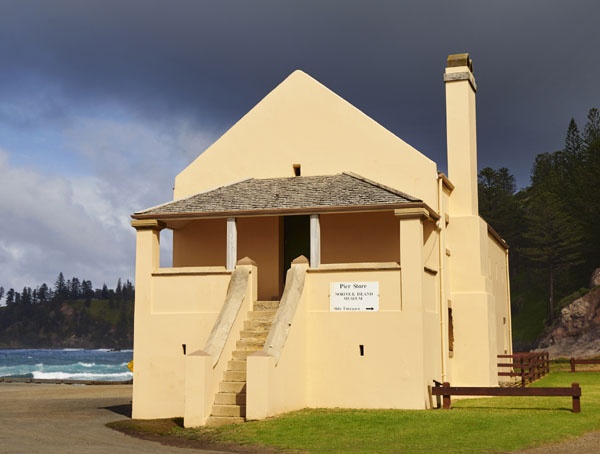
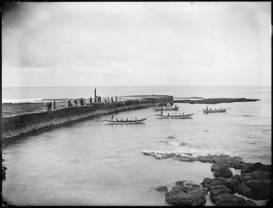
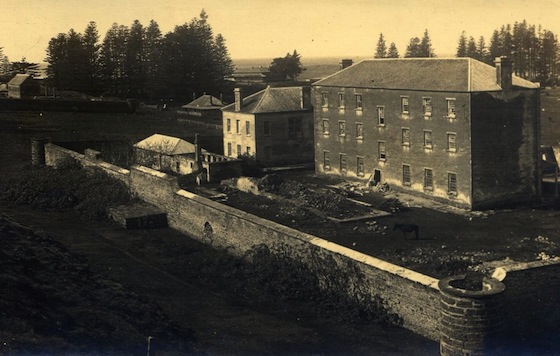
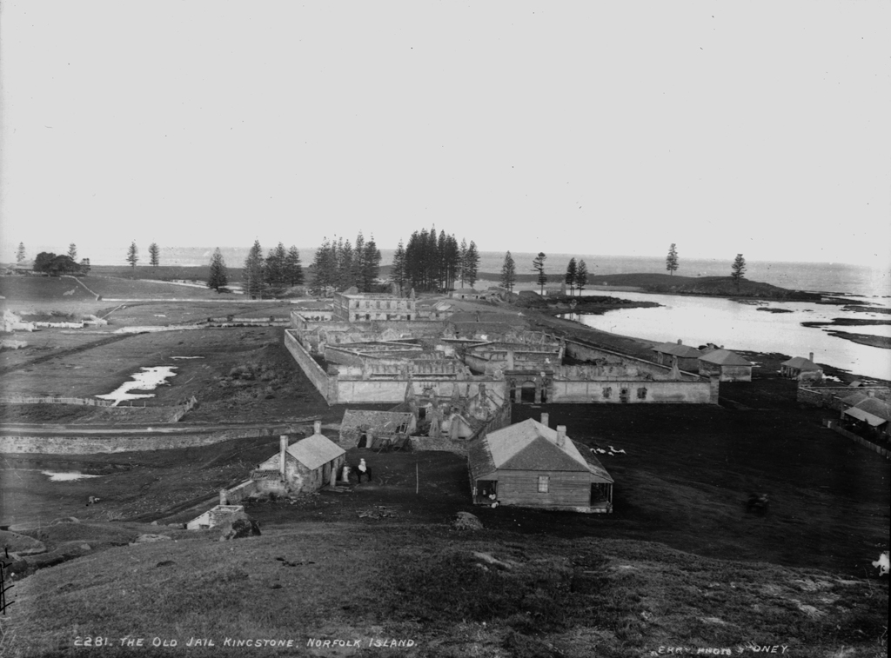
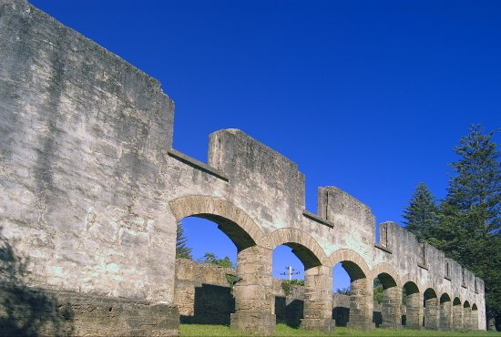

Locations
The Pier Store
When was it built?
The Pier Store was built in as a commissariat store. It was built as a secure building because food, clothes and uniforms were stored there. Until about 1840 there was a boatshed attached at the western end
Its uses during the Second Settlement
On , the Pier Store (as well as other low lying areas of Kingston) was flooded by a very high tide or tsunami. Because of the damage, the new Commissariat Store was built on Quality Row. At that time the water mill was not able to grind all the grain that was needed so 26 handmills were installed upstairs in the Pier Store. Each of these was operated by two men and men who were unable to do harder work were used on the handmills. The mills only lasted 12 months before they were worn out. The Crankmill then was used for the grinding and the handmills were removed. The top floor of the Pier Store was then used as a guard room so the balcony was installed to give a better view of the area. Downstairs was still used as a store.
Its uses during the Third Settlement
The Pitcairners used the Pier Store as a customs store and part of the upper floor was used as a coffin room.
Its uses today
The Pier Store has been used continuously since it was built in and became part of the Norfolk Island Museum in . Downstairs you will find the Sirius exhibition. Upstairs is now dedicated to exhibitions about Norfolk Island history since the arrival of the Pitcairners.
The Royal Engineer's Office

When was it built?
The Royal Engineer’s Office was built in -. There was a stable for four horses built behind the Royal Engineer’s Office.
Its uses during the Second Settlement
The Royal Engineers were responsible for the design of many of the Kingston buildings. They worked with the Foreman of Works to ensure the buildings were built correctly.
The Royal Engineers also designed the roads, seawall, drainage systems, underground sewers and the pier. The fact that the pier, roads and seawall are still in use today is a proper memorial to the excellence of their work.
Its uses during the Third Settlement
The Royal Engineer’s Office was used as a private home and was purchased by the US Consular Agent in the s and the Meade and Adams families lived there. In it was taken to be the home of a police constable and later became the home of the Signals Master. It was lived in by other families until the s.
Its uses today
Today the Royal Engineer’s Office has been restored and is used as the REO Café. The stables are used as the public toilets.
Kingston Pier
When was it built?
Work began on the pier in under the supervision of the Royal Engineer, Lieutenant Lugard. Building finished in but it was never completed to its original design. Much of the work was done by convicts who had committed additional offences on Norfolk Island. They often worked up to their waists in seawater, wearing heavy chains weighing up to 16kgs. They quarried rock from underwater and broke it up for use.
Its uses during the First Settlement
During the First Settlement, landings occurred to the west of the current pier.
Its uses during the Second Settlement
It was built during the Second Settlement to give improved conditions for landing things on the island. Its curved shape was designed to reduce the strength of the waves. As waves hit the pier, they are reflected off at 90 degrees, losing much of their energy.
Its uses during the Third Settlement
The Pitcairners landed on the pier on the . It continued to be used as the main pier.
Its uses today
The pier has been repaired regularly but it still is the same size and shape it was when it was completed.
The davit on the pier lifts fishing boats in and out of the water. It is still used today for landing things that come to Norfolk Island by boat. It is one of the two sites that fishing boats leave from and is also a popular fishing spot for anglers.
Commissariat Store
Its use during the Second Settlement
This building was built to replace the two commissariats that had been near the waterfront, and it was built in . The stores near the pier had been damaged in a big flood and Colonel Anderson knew that he had to keep the stores safe. The building has three storeys, with a basement at ground level.
Its use today
The second and lower main floors are now the All Saints Church, the top floor holds archives and the basement is now the Commissariat Store Museum.
Many of the items on show are of archaeological interest, showing the four settlements of Norfolk Island, from the Polynesian settlement to the present day and there is much of interest to see.
Norfolk Island has a long and interesting history and we are still finding items that show the way of life that people led. The everyday items that people used in their homes tell the historians a great deal about the way they adapted to life on the island, as they often had to make items that they could not just buy in the shops. The settlers also brought with them many beautiful, precious or useful things that they needed. When they came to the island many of them knew that they would be here for a long time as travel was difficult.
Gaol
Its uses during the First Settlement
During the first years of the First Settlement convicts lived in small wooden huts along the seafront and flatlands but later a gaol was needed to house wrongdoers. A stone gaol was built near the shore and is known as The Old Gaol. It was destroyed before the First Settlement was abandoned in .
Its uses during the Second Settlement
The gaols were only used to house convicts who had committed extra offences on Norfolk Island. Other convicts were housed in prisoners’ barracks. In the late s a small temporary gaol was built over the ruins of the first settlement one. It was still being used in the mid s. The New Gaol was built gradually from to starting under Major Anderson. It was a pentagonal prison with 5 wings of cells each with their own exercise yard. Each wing could be supervised from the central building.
Unfortunately the gaol was terribly overcrowded which made living conditions appalling. Punishments were often very severe and convicts were hanged for serious offences.
Its uses during the Third Settlement
The Pitcairners did not use the gaol as they did not need it. They dismantled parts of it to recycle the stone for use in other buildings.
Its uses today
The Old Gaol is a ruin with only a few rocks visible on the land on the beachfront. The New Gaol is a ruin but parts of the complex are now used for performances.
Longridge
Its uses during the Second Settlement
Planning for a major building program in the Longridge area began in . The main purpose of Longridge was as an agricultural settlement with the prisoners providing the labour for the farms. A wooden Barracks made up of three buildings was built there under Captain Maconochie as a separate prison to accommodate newly arrived convicts. All together they held 167 prisoners. There were also all the buildings needed for the large agricultural activities carried out there and numbered around 35. Some families lived at Longridge. Among them was the family of Gilbert Robertson, the Superintendant of Agriculture from 1845. His daughter, Elizabeth wrote a detailed diary about her life there until her death in which gives detail on the way of life at Longridge. See Elizabeth Robertson’s Diary Norfolk Island (ed Merval Hoare).
Its uses during the Third Settlement
When the Pitcairners moved to Norfolk Island from Pitcairn Island in , some of them lived in buildings at Longridge. Members of the Nobbs family lived in what is now Branka House until World War II.
Its uses during the Third Settlement
The Pitcairners did not use the gaol as they did not need it. They dismantled parts of it to recycle the stone for use in other buildings.
Its uses today
Much of the Longridge area is now used for farming and houses have been built in the area. The Arches remain from the Second Settlement buildings at Longridge. Unfortunately its use and history are unknown.